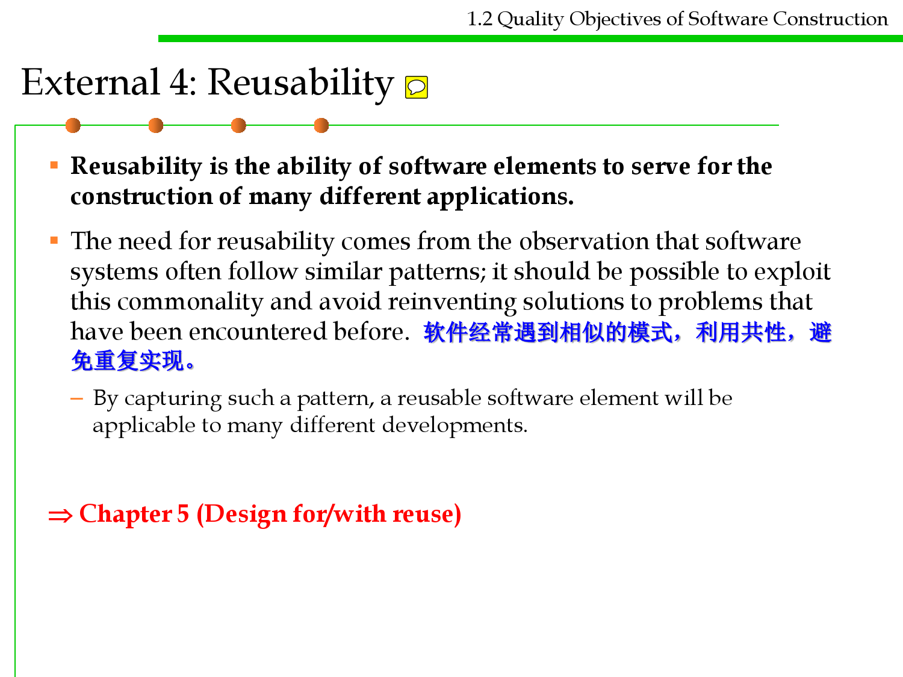
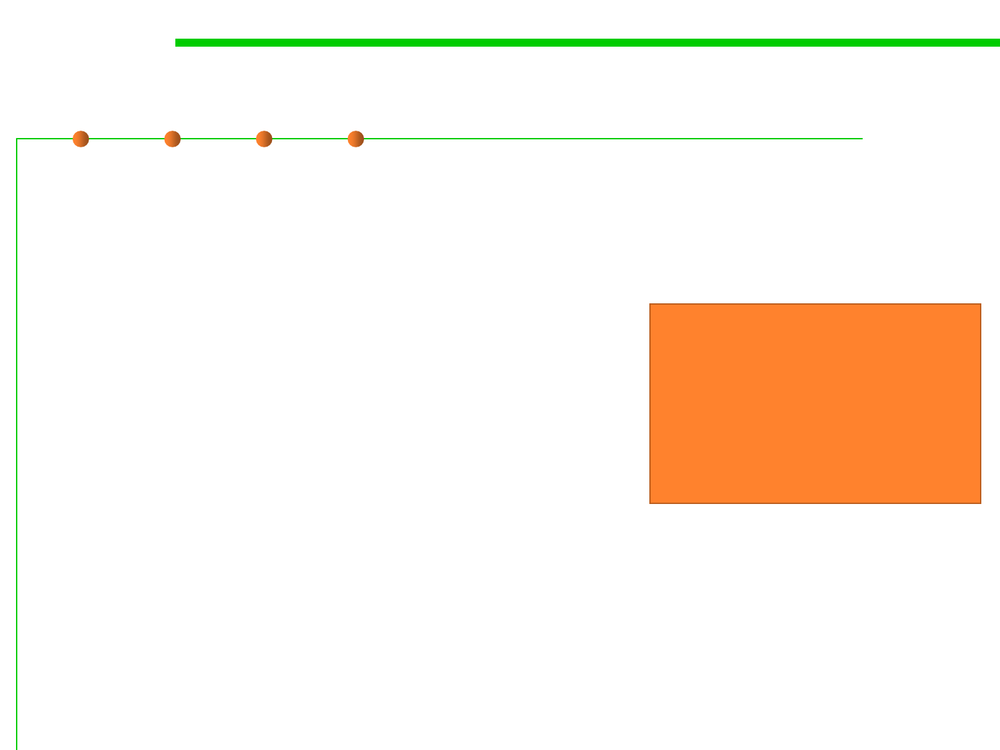

微信公众号[深容Pubmed文献检索] 1. 此处右键：选菜单【翻成中文（简体）】 2. 翻译后，此处右键：选菜单【打印...】成PDF格式
建议屏幕分辨率：1920X1080；如果屏幕太小，可以按Ctrl + 或 Ctrl -缩放网页。

Software Construction
Chapter 1: Views and Quality Objectives of
Software Construction
1.2 Quality Objectives of Software
Construction
Xu Hanchuan
xhc@hit.edu.cn
February 26, 2019
Outline
1.2 Quality Objectives of Software Construction
▪ Quality properties of software systems
– External vs. internal quality factors
– Important external quality factors
– Tradeoff between quality factors
▪ Five key quality objectives of software construction
– Easy to understand: elegant and beautiful code / understandability
– Ready for change: maintainability and adaptability
– Cheap for develop: design for/with reuse: reusability
– Safe from bugs: robustness
– Efficient to run: performance
▪ Summary

Objective of this lecture
1.2 Quality Objectives of Software Construction
▪ To know quality factors to be cared in software construction;
▪ To understand the consequences if quality objectives cannot be
achieved;
▪ To know what construction techniques are to be studied for each
quality factor in this course.

Software Construction
1 Quality properties of software
systems

1.2 Quality Objectives of Software Construction
External and internal quality factors
External quality factors affect users.
▪ External quality factors: qualities such as speed or ease of use,
whose presence or absence in a software product may be detected
by its users (not only the people who actually interact with the final
products, but also those who purchase the software or contract out
its development). 外部质量是用户能够感受到的，影响用户的使用
▪ Other qualities applicable to a software product, such as being
modular, or readable, are internal factors, perceptible only to
computer professionals who have access to the actual software text.
内部质量影响使用代码的相关人员，影响软件本身和开发者
Internal quality factors affect the software itself and its developers.
▪ In the end, only external factors matter.
▪ But the key to achieving these external factors is in the internal
ones: for the users to enjoy the visible qualities, the designers and
implementers must have applied internal techniques that will ensure
the hidden qualities.
External quality results from internal quality.

Software Construction
(1) External quality factors
External 1: Correctness
1.2 Quality Objectives of Software Construction
▪ Correctness is the ability of software products to perform their
exact tasks, as defined by their specification.
▪ Correctness is the prime quality.
▪ Approaches of ensuring correctness: Conditional.
– A serious software system touches on so many areas that
it would be impossible to guarantee its correctness
by dealing with all components and properties on
a single level. Instead, a layered approach is
necessary, each layer relying on lower ones.
A–ssWume sehaosuoldftwenasruerseytshteamt thisedliebvrealroipesedariencloaryreercst.
Eacahnlda,yseerpgauratrealnyt,etehsaittsthceoarrpepcltinceastsiounnidsecrotrhrect
assuasmsupmtioinngththaet iltisbrloawrieesr alarey.er is also correct.
假定一个软件系统是分层开发的，每层都要确保自己是
正确的，同时假定其调用的低层也是正确的。
Reusability (design for/with reuse, Chapter 5)

External 1: Correctness
1.2 Quality Objectives of Software Construction
▪ Approaches of ensuring correctness: Testing and debugging.
▪ Defensive programming such as typing(类型化/静态类型检查) and
assertions, meant to help build software that is correct from the start
— rather than debugging it into correctness. （防患于未然）
Robustness (Chapter 7)
▪ Formal approach: “check”, “guarantee” and “ensure”
– Mathematical techniques for formal program specification and verification
Graduate courses
External 2: Robustness
1.2 Quality Objectives of Software Construction
▪ Robustness is the ability of software systems to react appropriately
to abnormal conditions.健壮性是软件系统对异常情况作出适当反应的能力。
– Robustness complements correctness.
– Correctness addresses the behavior of a system in cases covered by its
specification;
– Robustness characterizes what happens outside of that specification.
▪ Robustness is to make sure that if such cases do arise, the system
does not cause catastrophic(灾难性的) events; it should produce
appropriate error messages, terminate its execution cleanly, or
enter a so-called “graceful degradation(降级)” mode.

External 2: Robustness
1.2 Quality Objectives of Software Construction
▪ Robustness is concerned with “abnormal case”, which implies that
the notions of normal and abnormal case are always relative to a
certain specification健壮性同异常情况相关，异常或非异常取决于程序的规
格说明
– An abnormal case is simply a case that is not covered by the specification. 异
常情况是程序的规格说明中没有涉及的部分
– If you widen the specification, cases that used to be abnormal become normal
— even if they correspond to events such as erroneous(错误的) user input
that you would prefer not to happen.
– “Normal” in this sense does not mean “desirable”, but simply “planned for
in the design of the software”.
– Although it may seem paradoxical （反常的）at first that erroneous input
should be called a normal case, any other approach would have to rely on
subjective criteria, and so would be useless.
判断是否是异常的标准，不取决于客观的正确标准，而取决于程序的规格说明
Exception handling (Chapter 7)

1.2 Quality Objectives of Software Construction
External 3: Extendibility
▪ Extendibility is the ease of adapting software products to changes of
specification.可扩展性是指软件易于调整以适应变化的能力。
▪ The problem of extendibility is one of scale. 可扩展性同规模密切相关
– For small programs change is usually not a difficult issue; but as software
grows bigger, it becomes harder and harder to adapt.
– A large software system often looks to its maintainers as a giant house of
cards in which pulling out any one element might cause the whole edifice(
大厦) to collapse. 越大越难以扩展
▪ We need extendibility because at the basis of all software lies some
human phenomenon and hence fickleness (易变). 软件是易变的，需
要可扩展性
▪ Traditional approaches did not take enough account of change,
relying instead on an ideal view of the software lifecycle where an
initial analysis stage freezes the requirements, the rest of the
process being devoted to designing and building a solution. 传统方
法在最初冻结需求，假定没有变化，因此难以适应变化。

1.2 Quality Objectives of Software Construction
External 3: Extendibility
▪ Two principles are essential for improving extendibility:
– Design simplicity: a simple architecture will always be easier to adapt to
changes than a complex one. 简单的体系结构总是比复杂的体系更容易适
应变化。
– Decentralization(离散化): the more autonomous(自治的) the modules, the
higher the likelihood that a simple change will affect just one module, or a
small number of modules, rather than triggering off a chain reaction of
changes over the whole system. 模块自治性越强，变化时对其余模块影响
越小。
Chapter 3 (ADT and OOP)
Chapter 6 (Modularity and adaptability)

External 4: Reusability
1.2 Quality Objectives of Software Construction
▪ Reusability is the ability of software elements to serve for the
construction of many different applications.
▪ The need for reusability comes from the observation that software
systems often follow similar patterns; it should be possible to exploit
this commonality and avoid reinventing solutions to problems that
have been encountered before. 软件经常遇到相似的模式，利用共性，避
免重复实现。
– By capturing such a pattern, a reusable software element will be
applicable to many different developments.
Chapter 5 (Design for/with reuse)
1.2 Quality Objectives of Software Construction
External 5: Compatibility
▪ Compatibility is the ease of combining software elements with
others.
▪ Compatibility is important because we do not develop software
elements in a vacuum (真空): they need to interact with each other.
▪ But they too often have trouble interacting because they make
conflicting assumptions about the rest of the world. 难点：不同软件
有不同的设定/规定
– An example is the wide variety of incompatible file formats supported by
many operating systems. A program can directly use another’s result as
input only if the file formats are compatible.
1.2 Quality Objectives of Software Construction
External 5: Compatibility
▪ The key to compatibility lies in homogeneity(一致性) of design, and
in agreeing on standardized conventions for inter-program
communication.
The key to compatibility is standardization, especially
▪ Approaches include: standard protocols. 标准化是解决兼容性的关键
– Standardized file formats, as in the Unix system, where every text file is
simply a sequence of characters.
– Standardized data structures, as in Lisp systems, where all data, and
programs as well, are represented by binary trees (called lists in Lisp).
– Standardized user interfaces, as on various versions of Windows, OS/2
and MacOS, where all tools rely on a single paradigm for communication
with the user, based on standard components such as windows, icons,
menus etc.
▪ More general solutions are obtained by defining standardized access
protocols to all important entities manipulated by the software. 通过
协议来实现更通用的兼容性

1.2 Quality Objectives of Software Construction
External 6: Efficiency(效率)
▪ Efficiency is the ability of a software system to place as few
demands as possible on hardware resources, such as processor
time, space occupied in internal and external memories, bandwidth
used in communication devices.效率是软件系统对硬件资源尽可能
少的需求的能力
▪ Efficiency does not matter much if the software is not correct
(suggesting a new dictum (格言), “do not worry how fast it is unless it is
also right ”). The concern for efficiency must be balanced with other
goals such as extendibility and reusability; extreme optimizations
make the software so specialized as to be unfit for change and reuse.
– Tradeoff among multiple quality factors
▪ Algorithms, I/O, memory management, etc.
Chapter 8 (Performance)
Abstract concepts for correctness of
computation vs. Concrete implementation
for performance through optimization

1.2 Quality Objectives of Software Construction
External 7: Portability (可移植性)
▪ Portability is the ease of transferring software products to various
hardware and software environments.可移植性是指便于将软件产品
转移到各种硬件和软件环境。
▪ Portability addresses variations not just of the physical hardware but
more generally of the hardware-software machine, the one that we
really program, which includes the operating system, the window
system if applicable, and other fundamental tools.


External 8: Ease of use
1.2 Quality Objectives of Software Construction
▪ Ease of use is the ease with which people of various backgrounds
and qualifications can learn to use software products and apply
them to solve problems. It also covers the ease of installation,
operation and monitoring. 用户可以轻松掌握软件的使用，也包括安
装、运行和监控的容易度
▪ How to provide detailed guidance and explanations to novice(初学者
) users, without bothering expert users who just want to get right
down to business.
▪ One of the keys to ease of use is structural simplicity. A well-
designed system, built according to a clear, well thought-out
structure, will tend to be easier to learn and use than a messy one.结
构简洁
▪ Know the user. The argument is that a good designer must make an
effort to understand the system’s intended user community. 理解用
户，换位思考，站在用户的角度设计软件 Chapter 10 (GUI)
1.2 Quality Objectives of Software Construction
External 9: Functionality
▪ Functionality is the extent of possibilities provided by a system.
▪ Featurism (often “creeping featurism”蠕变特征) 程序设计中一种不
适宜的趋势，即软件开发者增加越来越多的功能，企图跟上竞争，其
结果是程序极为复杂、不灵活、占用过多的磁盘空间
– The easier problem is the loss of consistency that may result from the
addition of new features, affecting its ease of use. Users are indeed known
to complain that all the “bells and whistles(浮华的装饰)” of a product’s
new version make it horrendously complex. 过多的新功能容易带来一
致性的缺失，影响易用性
– The more difficult problem is to avoid being so focused on features as to
forget the other qualities (Ignorance of overall quality).

1.2 Quality Objectives of Software Construction
External 9: Functionality
▪ What Osmond suggests (the color curve) is, aided by the quality-
enhancing techniques of OO development, to maintain the quality
level constant throughout the project for all aspects but functionality.
在质量提升技术的帮助下，可以在整个项目中保持质量水平不变，而不仅仅
是功能性。
▪ You just do not compromise on reliability, extendibility and the like:
you refuse to proceed with new features until you are happy with
the features you have.
Chapter 2 (Agile, SCM)
Start with a small set of key features
with all quality factors considered.
Add more features gradually during
development process and guarantee
the same quality as key features.
Osmond’s curves
External 10: Timeliness
1.2 Quality Objectives of Software Construction
▪ Timeliness is the ability of a software system to be released when
or before its users want it.
▪ A great software product that appears too late might miss its target
altogether.
1.2 Quality Objectives of Software Construction
External 10++: Other qualities
▪ Verifiability(可验证性) is the ease of preparing acceptance
procedures, especially test data, and procedures for detecting failures
and tracing them to errors during the validation and operation
phases. 是否易于验证
▪ Integrity(完整性) is the ability of software systems to protect their
various components (programs, data) against unauthorized access
and modification.软件系统保护其各种组件（程序和数据）免受未经授权的
访问和修改的能力。
▪ Repairability is the ability to facilitate the repair of defects.
▪ Economy, the companion of timeliness, is the ability of a system to
be completed on or below its assigned budget.同及时性相伴，是系统能
够按照其分配的预算或低于预算完成的能力。

Software Construction
(2) Internal quality factors
Internal quality factors
1.2 Quality Objectives of Software Construction
▪ Source code related factors such as Lines of Code (LOC),
Cyclomatic Complexity(圈复杂度, 用来衡量一个模块判定结构的复杂程度
), etc
▪ Architecture-related factors such as coupling(耦合度), cohesion(内
聚度), 设计中追求高内聚和低耦合,etc
▪ Readability, understandability and clearness
▪ Complexity
▪ Size
▪ Internal quality factors are usually used as partial measurement of
external quality factors.内部质量因素通常用作外部质量因素的部分度量。

Software Construction
(3) Tradeoff between quality
properties

1.2 Quality Objectives of Software Construction
Tradeoff between quality properties
▪ How can one get integrity without introducing protections of various
kinds, which will inevitably hamper ease of use?
▪ Economy often seems to fight with functionality.
▪ Optimal efficiency would require perfect
adaptation to a particular hardware and
software environment, which is the opposite
of portability, and perfect adaptation to a
specification, where reusability pushes
towards solving problems more general
than the one initially given.
Integrity vs. ease of use
Economy vs. functionality
Efficiency vs. portability
Efficiency vs. reusability
Economy vs. reusability
Timeliness vs. extendibility
▪ Timeliness pressures might tempt us to use “Rapid Application
Development” techniques whose results may not enjoy much
extendibility.

1.2 Quality Objectives of Software Construction
Tradeoff between quality properties
▪ Developers need to make tradeoffs.
– Too often, developers make these tradeoffs implicitly, without taking the
time to examine the issues involved and the various choices available;
efficiency tends to be the dominating factor in such silent decisions. 开
发人员通常都是隐式地进行平衡，不会刻意的在多个方案中均衡，效率往
往成为主导因素。
– A true software engineering approach implies an effort to state the criteria
clearly and make the choices consciously. 真正的软件工程方法中，质量目
标应明确指出
▪ Necessary as tradeoffs between quality factors may be, one factor
stands out from the rest: correctness.
– There is never any justification for compromising correctness for the sake
of other concerns such as efficiency.
– If the software does not perform its function, the rest is useless.
正确性放在首要地位

1.2 Quality Objectives of Software Construction
Key concerns of software construction
▪ All the qualities discussed above are important.
▪ But in the current state of the software industry, four stand out:
– Correctness and robustness: reliability
• Systematic approaches to software construction 系统的软件构建方法
• Formal specification 形式化的软件规格说明
• Automatic checking during development process 在开发过程中自动检查
• Better language mechanism 更好的语言机制
• Consistency checking tools 一致性检查工具
– Extendibility and reusability: modularity

1.2 Quality Objectives of Software Construction
How OOP improves quality
▪ Correctness: encapsulation, decentralization
▪ Robustness: encapsulation, error handling
▪ Extendibility: encapsulation, information hiding
▪ Reusability: modularity, component, models, patterns
▪ Compatibility: standardized module and interface
▪ Portability: information hiding, abstraction
▪ Ease of use: GUI components, framework
▪ Efficiency: reusable components
▪ Timeliness: modeling, reuse
▪ Economy: reuse
▪ Functionality: extendibility

Software Construction
2 Five key quality objectives of
software construction
1.2 Quality Objectives of Software Construction
Quality considerations of this course
▪ Elegant and beautiful code easy
to understand, understandability
▪ Design for/with reuse cheap
for develop
▪ Low complexity ready for
changes, easy to extend
▪ Robustness and correctness
safe from bug, not error-prone
▪ Performance and efficiency
efficient to run
Chapter 4 Understandability
Chapter 5 Reusability
Chapter 6
Extendibility/Maintainability
Chapter 7
Robustness/Correctness
Chapter 8
Efficiency/Performance
Chapter 3 ADT and OOP
Chapter 9 Refactoring

Understandability
1.2 Quality Objectives of Software Construction
Build-
time
Moment
Code-level
Component-level
代码的可理解性
（变量/子程序/
语句的命名与构
造标准、代码布 构件/项目的可理解
局与风格、注释、 性（包的组织、文
复杂度）
件的组织、命名空
Review;
间）
Walkthrough;
Period
Code-level Component-level
Refactoring
函数规约
Run-
time
Log
Trace

Reusability
1.2 Quality Objectives of Software Construction
Build-
time
Moment
Code-level
Component-level
ADT/OOP;
接口与实现分离;
重载;
继承/重载/重写;
组合/代理;
多态;
子类型与泛型编
程;
OO设计模式
API design;
Library;
Framework
(for/with reuse)
Period
Code-level Component-level
Run-
time

1.2 Quality Objectives of Software Construction
Maintainability and Adaptability
Build-
time
Moment
Code-level
Component-level
模块化设计;
聚合度/耦合度;
SOLID;
OO设计模式;
Table-based
programming;
State-based
programming;
Grammar-based
programming
SOLID;
GRASP
Period
Code-level Component-level
SCM
Version Control
Run-
time

Robustness
1.2 Quality Objectives of Software Construction
Moment
Period
Code-level
Component-level Code-level Component-level
Build-
time
Error handling;
Exception
handling;
Assertion;
Defensive
programming;
Test-first
programming
Unit Testing
Integration Testing
Regression Testing
Run-
time
Debug
Dumping
Logging
Tracing
Performance
1.2 Quality Objectives of Software Construction
Moment
Code-level
Component-level
Period
Code-level Component-level
Build-
time
Design pattern
Run-
time
空间复杂性（内
存管理）;
时间复杂性（算
法性能）;
代码调优
分布式系统
Performance
analysis and
tuning
并行/多线程程序


Software Construction
Summary

Summary
1.2 Quality Objectives of Software Construction
▪ Quality properties of software systems
– External vs. internal quality factors
– Important external quality factors
– Tradeoff between quality factors
▪ Five key quality objectives of software construction
– Easy to understand: elegant and beautiful code / understandability
– Ready for change: maintainability and adaptability
– Cheap for develop: design for/with reuse: reusability
– Safe from bugs: robustness
– Efficient to run: performance
▪ Construction techniques to be studied in this course (classified by
the orientation of five key quality objectives)


Software Construction
The end
February 26, 2019